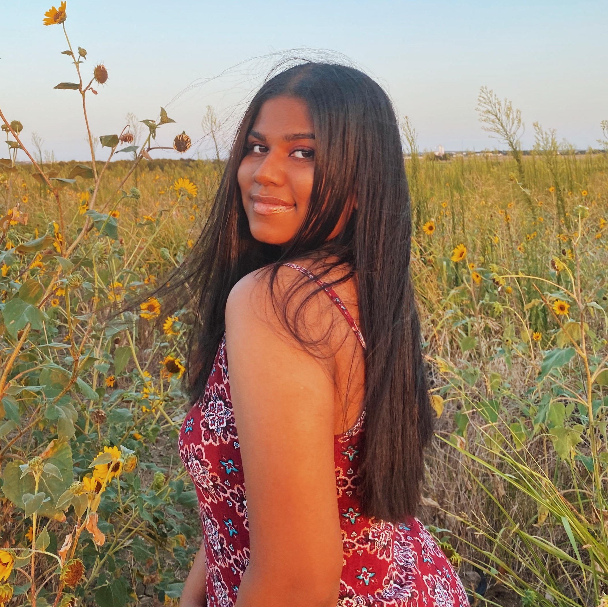

How COVID-19 Changed Our Lives
By: Hannah Maung, Gretel Rajamoney, Luke Bray, Zachary Smith
Dec 6, 2020

Aceing classes is a difficult enough task in itself. But performing well in the midst of a global pandemic? Now that is a totally different story. The shift from in-person classes to completely remote classes during COVID-19 has been exceptionally challenging for us all. Our team wanted to create this blog to share our personal experiences with online classes and remote learning at Oregon State University, as well as share some advice regarding how to succeed as a virtual student. Scroll down to the 'Meet the Team' section, where you can read all of our personal experiences. We would love to hear about your personal experiences as a students during COVID-19. To share your experiences and read the experiences of others please navigate to our 'Discussion' section.
Meet the Team

Hannah Maung Junior, Computer Science applied with Business
I remember getting sent home from OSU right when the COVID-19 news came out like it was just yesterday. I remember all my friends and I had barely any idea what was happening, but we all said goodbye and planned to see each other back at school in a couple weeks. Little did we know, we wouldn’t come back to school until six months later. My whole sophomore year spring term was all online. I had to attend all my lectures on zoom and do all my homework in a place where I wasn’t used to doing it at- my house back in my hometown. I personally struggled a lot with this because there were so many extra distractions at my house. I had a solid routine at school and had so many different resources and places to go to study. All of that was stripped away from me in seconds. It was really difficult for me to stay encouraged and maintain my motivation to learn during a global pandemic. Life seemed so surreal at that time, and it still does. It’s been really difficult to accept that remote learning and the way life is going right now is going to be the new norm for a while.
Gretel Rajamoney Junior, Computer Science applied with Data Science 
Looking back to the finale of winter term when COVID-19 had began to take affect on all of our lives, seems like just a few short weeks ago. When in reality, it has been a shocking 9 months since were packing our bags ready to leave campus. I remember packing a small suitcase planning to head to my home in Atlanta for spring break, unfortunately news that students would not be returning to campus was released two days after I had arrived at home. I had to leave all of my belongings and nearly all of my close friends back in Oregon, and face the struggles of online learning all alone on the other side of the country. Adjusting to this drastic change was an obstacle like no other, it took me nearly all of spring term to put together a solid studying routine. And even with this routine, I struggled to set aside my personal life, stay motivated to perform well, achieve good grades, or even maintain a proper work-ethic. Although I can finally say that I have adjusted to online learning, it still seems absurd to believe that this is really my life as a student in a pandemic.
Luke Bray Junior, Computer Science applied with Business
When looking back at winter term of 2019, students at OSU had no idea what was going on regarding COVID-19. My roomates and I decided that we were moving home for the remained of the school year just to be safe. Transitioning to online school back at home was definitely very hard for me during spring term of 2019, it was nice to be home and see all of my friends but it was difficult to get back into the school mindset and keeping up with my classes. At this point, I've gotten very used to the circumstances of online school but I hope we can soon make our way back onto campus!
INSERT NAME
INSERT YEAR, INSERT MAJOR

INSERT PERSONAL EXPERIENCE
Our Advice: How to Succeed in Online Classes During COVID-19
- 1. Avoid Distractions
- 2. Manage Time Wisely
- 3. Stay Organized
- 4. Reach Out for Help
- 5. Be Patient with Yourself
- 6. Effective Study Spaces
While being quarantined at home, it is quite difficult to eliminate distractions. You are essentially being asked to be a student while being surrounded by your loved ones and various diversions at all hours. It is crucial to your success as a student to set aside all of these distractions, and dedicate 100% of your attention towards your academics. This can include many things: putting aside your phone, blocking off all noises with headphones, and removing yourself from any situation that has the potential to avert your attention.
Managing your time effectively as a student can be hard, but it is imperative in order to succeed and do well in your classes. It is extremely important to set aside a good chunk of your time everyday dedicated to work on homework and attend online lectures. It is easy to get distracted now that classes aren’t in person and ‘mandatory,’ but spending time learning the class material will make your life a lot easier as you tackle the assignments. Starting early on assignments and giving yourself enough time to successfully finish will take a lot of unnecessary stress off your shoulders as well.
It is imperative to your prosperity as a student to stay organized, especially during these tough COVID-19 times. By maintaining the habit of staying organized will not only contribute to success in your grades, it will also help alleviate the stress and anxiety caused by college. There are many ways to implement organizational habits within your daily college routine, such as: writing down all assignments and important dates into a calendar or planner, setting alarms in order to wake up early, maintaining proper sleeping habits, creating reminders and notifications, writing out daily to-do lists, and several more.
There are so many resources out there that many students do not know about. At every university, there is usually an academic center that will be more than happy to help, counselors, professors, TA’s, tutors, and your peers! Since most classes are on Zoom, if you recognize a student’s name in your class, you can reach out to them and create a connection that could help you in the future. Finding a solid study group can be so important for not only doing well in the class, but helping you stay motivated and positive. Reaching out to professors can be intimidating, but they are there to help and will be glad that you asked. Attend office hours and email your professors with questions. This could also create a crucial relationship that could result in a great letter of recommendation or proposed academic opportunities.
The biggest reminder that will help you through school this year: this is new to everyone! Everyone is having a hard time with this adjustment, not just you. This is such a difficult time so it is so important to be patient with yourself. Don’t be so hard on yourself if you get a bad grade on an exam or if you take the day off from school work to rest. Going from in-person classes to all online classes is extremely challenging. You are given so many additional things to undertake, on top of being a student. Remote learning is very new to the majority of us students, so we are all learning together.
Having a proper study space is pivotal to your academic success. It is very difficult to be an efficient high-performing student if you are attending classes and working on homework while laying in bed. In order to create a a positive and productive working environment, you should separate yourself from your relaxing environment. This can mean working at a desk aside from your bed, setting up a chair in your backyard, visiting public locations such as coffee shops or libraries, or even relocating on a daily basis to keep things interesting. Your work space should contain all essential materials necessary for your courses, such as your textbooks, calculator, laptop charger, noise-cancelling headphones, writing utensils, and any other materials imperative for your success.
Discussion
This is where we make a discussion thing